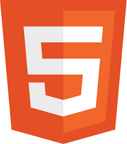
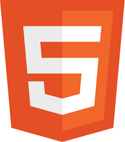

En este ejemplo hemos animado unas imágenes de diferentes formas y además hemos utilizado animation-delay para que se vean las animaciones secuencialmente


Realiza un par de ejemplos de animación con CSS3, comenta cada parámetro o atributo utilizado.
En este ejercicio intentaremos usar distintas formas de animación e intentar coger ideas para poder utilizarlas en algun proyecto.
En el header ya hemos utilizado una animación, esta lo que hace es cambiar el color de fondo, hemos programado dos parámetros en el header para la animación, que se ejecute en 8 segundos y que se ejecute infinitamente, con lo cual estará siempre cambiando.
En esta misma introducción he decidido probar una animación que se realiza sobre las letras mismas, el efecto esque las letras se introducen desde la derecha.En este casosolo se ejecuta una vez y realmente lo que hacemos es desplazar las letras de fuera de la web hacia dentro.
En este ejemplo hemos animado unas imágenes de diferentes formas y además hemos utilizado animation-delay para que se vean las animaciones secuencialmente

En esta ultima sección aplicamos animaciones que haran captar la atención al usuario en botones, esto podrian ser banners o imagenes.